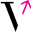
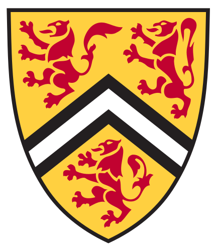

Référence
Reconstruction NeuralDMD
IA · Vision par ordinateur · Physique
Doctorant en informatique Université de Toronto
Je suis doctorant en informatique à l’Université de Toronto, avec une formation en physique. Mes travaux portent sur l’intelligence artificielle, la vision par ordinateur, la dynamique des systèmes physiques et la modélisation générative 3D.
Actuellement stagiaire de recherche chez Autodesk Research ↗
Je suis doctorant en informatique à l’Université de Toronto et affilié au Vector Institute, sous la direction d’Aviad Levis et de David Lindell. Je fais partie du groupe Physics-Informed Vision and Imaging (PI-Vision) et du Toronto Computational Imaging Group (TCIG). Avant mon doctorat, j’ai étudié la physique à Sharif University of Technology, puis obtenu une maîtrise en physique et astronomie à l’Université de Waterloo, en partenariat avec le Perimeter Institute.
Ma formation et mes recherches couvrent la physique, l’intelligence artificielle et la vision par ordinateur. Chez Autodesk Research, je travaille sur l’optimisation topologique pour la modélisation générative 3D et sur la conception procédurale 3D à l’aide d’agents d’IA. Mes projets universitaires comprennent les représentations neuronales de dynamiques physiques, l’imagerie des trous noirs et l’inférence de paramètres physiques.
Projets en vision par ordinateur et en apprentissage automatique pour les sciences.
Représentations neuronales, modèles génératifs et prédiction de séquences.
Dynamique des systèmes physiques, imagerie des trous noirs et inférence de paramètres.
Optimisation topologique et conception procédurale à l’aide d’agents d’IA chez Autodesk Research.
Vision par ordinateur, astrophysique et physique quantique.
Recherche universitaire et industrielle en apprentissage automatique, modélisation générative 3D, imagerie computationnelle et correction d’erreurs quantiques.
CV complet (en français) ↗Python · JAX · PyTorch
Calcul sur GPU et calcul haute performance
Août 2026 — Aujourd’hui
Stagiaire de recherche
Optimisation topologique pour la modélisation générative 3D et conception procédurale 3D à l’aide d’agents d’IA.
2024 — Aujourd’hui

Vector InstituteDoctorant · Direction : Aviad Levis et David Lindell
Apprentissage automatique et imagerie computationnelle, notamment NeuralDMD et BHCast.
2022 — Aujourd’hui
Étudiant-chercheur
Modèles génératifs de substitution pour l’imagerie des trous noirs, inférence calibrée et atténuation de la diffusion.
2023 — 2024
Stagiaire de recherche · Apprentissage automatique et informatique quantique
Décodeurs récurrents pour la correction d’erreurs quantiques ; co-inventeur d’une demande de brevet américain publiée ↗.
Formation
Doctorat en informatique · Fin prévue en 2028

Université de WaterlooPerimeter InstituteMaîtrise en physique et astronomie (MSc)
BSc en physique · Mineure en informatique
Perimeter Institute Graduate Students’ Conference
Événement ↗Posters NeuralDMD à ECCV 2026, ICCP 2025 et SMBH 2026.
Assistant d’enseignement pour le cours CSC320: Introduction to Visual Computing à l’Université de Toronto (2024–2025). J’ai également été assistant d’enseignement en physique à Sharif University of Technology.
J’encadre des projets de recherche de premier cycle en tomographie des trous noirs. J’ai également coencadré des travaux sur l’atténuation de la diffusion, publiés dans The Astrophysical Journal.